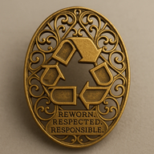

<header class="top search-top">
  <div class="search-bar">
    <span class="brand"><span>Guaranteed<br>Secondhand Fur</span></span>
    <button type="button" class="ic" id="setbtn" aria-label="Hulp bij zoeken" aria-haspopup="dialog" aria-expanded="false" aria-controls="set"><svg width="24" height="24" viewBox="0 0 24 24" fill="none" stroke="currentColor" stroke-width="1.5" aria-hidden="true"><path d="M4 7h10M18 7h2M4 17h4M12 17h8"/><circle cx="16" cy="7" r="2"/><circle cx="10" cy="17" r="2"/></svg></button>
  </div>
  <form class="search" id="search" role="search">
    <svg width="20" height="20" viewBox="0 0 24 24" fill="none" stroke="currentColor" stroke-width="1.6" aria-hidden="true"><circle cx="11" cy="11" r="7"/><path d="M20 20l-4-4"/></svg>
    <input type="search" id="q" aria-label="Wat zoek je?" placeholder="Wat zoek je?" autocomplete="off" enterkeyhint="search" maxlength="300">
    <button type="button" class="ic" id="clear" aria-label="Stop met zoeken" hidden><svg width="20" height="20" viewBox="0 0 24 24" fill="none" stroke="currentColor" stroke-width="1.6" aria-hidden="true"><path d="M6 6l12 12M18 6L6 18"/></svg></button>
    <button type="submit" class="ic" aria-label="Zoeken"><svg width="22" height="22" viewBox="0 0 24 24" fill="none" stroke="currentColor" stroke-width="1.5" aria-hidden="true"><path d="M4 12h15m-6-6 6 6-6 6"/></svg></button>
  </form>
</header>
<div class="search-strip" id="strip" hidden>
  <button type="button" id="search-summary" aria-haspopup="dialog" aria-expanded="false" aria-controls="big"><span role="status"></span><svg width="22" height="22" viewBox="0 0 24 24" fill="none" stroke="currentColor" stroke-width="1.5" aria-hidden="true"><path d="M8 3H3v5m13-5h5v5M3 16v5h5m13-5v5h-5"/></svg></button>
  <div class="chips"></div>
</div>
<div class="pop search-settings" id="set" role="dialog" aria-label="Hulp bij zoeken" hidden><div class="head"><h2>Hulp bij zoeken</h2><button type="button" class="ic" data-search-close aria-label="Sluiten"><svg width="22" height="22" viewBox="0 0 24 24" fill="none" stroke="currentColor" stroke-width="1.5" aria-hidden="true"><path d="M6 6l12 12M18 6L6 18"/></svg></button></div><div role="radiogroup" aria-label="Hulp bij zoeken" id="modes"></div></div>
<section class="pop search-big" id="big" role="dialog" aria-modal="true" aria-label="Het gesprek" hidden></section>
